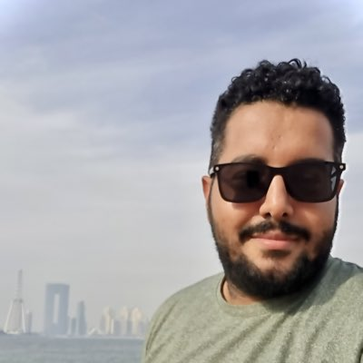

ML Engineer & Researcher
Senior Machine Learning Engineer working across computer vision, generative AI, and physics-informed machine learning. Based in Cairo, Egypt. Currently at Zazmic (Google Cloud Partner). M.Sc. Researcher at Cairo University.

01 — Profile
I'm an ML Engineer and Researcher based in Cairo, Egypt, working across both industry and academia.
Currently a Senior Machine Learning Engineer at Zazmic (Google Cloud Partner), building Generative AI systems, LLM pipelines, agentic workflows, and computer vision solutions. Previously, I built production ML systems for the NEOM smart city project at Solutions by STC — deploying VLMs on multi-GPU clusters and architecting scalable ML serving infrastructure.
I also work as a freelance ML consultant on Upwork, taking on select projects in computer vision, speech/audio processing, NLP, and generative AI for international clients.
My M.Sc. research at Cairo University focuses on physics-informed ML models for solving partial differential equations — combining Gaussian Processes, VAEs, and Physics-Informed Neural Networks.
02 — Research & Focus Areas
I work across applied ML engineering and academic research. On the industry side, I build and deploy ML systems for production. On the research side, my M.Sc. focuses on physics-informed ML models for simulating PDEs and forward/inverse problems. I'm also interested in computer vision and signal processing.
◆ M.Sc. Thesis — Cairo University
Developing frameworks that combine Gaussian Process priors with Variational Autoencoders and physics-informed constraints for solving partial differential equations. Thesis in progress.
PINNs, operator learning, physics-constrained generative models, PDE solvers, spectral methods, and data-driven simulation of physical systems.
Object detection & tracking, segmentation, 3D LiDAR point clouds, VLMs, multi-modal fusion, edge deployment, and large-scale visual analytics.
Speech & audio recognition, image/video processing, biomedical signals, and audio classification for real-world applications.
LLM pipelines, agentic orchestration (LangChain, LangGraph, Google ADK, MCP), RAG systems, structured output, and parameter-efficient fine-tuning.
Production ML pipelines, multi-GPU serving (Ray Serve, vLLM), containerization, event-driven architectures, MLOps, and cloud/on-premise deployment.
◆ Roles I've held
03 — Experience
Zazmic · United States (Remote) · Google Cloud Partner
Solutions by STC · Cairo, Egypt (Remote) · NEOM Smart City Project
COM-IOT Technologies · Dubai, UAE (Remote from Cairo)
Upwork · Remote, Global Clients
Avelabs · Cairo, Egypt · Autonomous Vehicles
Multiple Roles · Cairo, Egypt
04 — Skills
05 — Education
Cairo University
Oct 2021 — Present · GPA: 3.6 / 4.0
Thesis: Physics-Informed ML (PINNs, Operator Learning, Generative Models) for solving PDEs in forward and inverse problems and data-driven simulation. Coursework: Machine Intelligence II, Neural Networks, Cognitive Robotics, Computer Vision, Parallel Hardware & Computing, Advanced Security, Robotics II, Computer Architecture for Deep Learning, Advanced Deep Learning.
Ain Shams University
2015 — 2020
Major: Computer & Systems Engineering. Graduation Project: Developing the Perception System of Autonomous Underwater Vehicles (AUVs) for the RoboSub international competition — Project Grade: Excellent. Technically sponsored by Valeo.
06 — Publications
International Journal of Intelligent Computing and Information Sciences, Vol. 23, Issue 1, 2023
07 — Training & Certificates
2023
43 hours of lectures at the Oxford Mathematical Institute & Deep Medicine Program — ML fundamentals, advanced theory, and applications in health.
View Certificate →2025
Summer school covering computational neuroscience foundations, fMRI brain decoding, and hands-on EEG analysis projects.
View Certificate →08 — Beyond Work
2020, 2021, 2022
Participated three consecutive times in Europe's largest hackathon as an AI Developer — building AI prototypes with international teams in intensive coding marathons.
2017 — 2018
Ranked 4th in the MENA region for remotely operated underwater vehicles. Developed embedded software in C on ATmega and Python on Raspberry Pi.